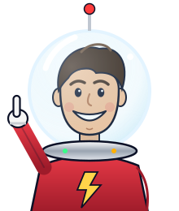

pages/01-start-here.html

▸ MISSION BRIEFING
PHOTOSHOP: START HERE

COMMANDER SKIP SAYS:
Hey there, sport! Never opened Photoshop? Swell... you don't need to be a wizard to teach it. Five ideas, one rule, and this page open while you work. That's the whole trick.
⚡ THE FIRST LAW OF THE LAB
Never destroy a pixel you might want back.
Masks, not the Eraser. Adjustment layers, not menus that bake changes in. If students leave knowing only this, they work the way professionals do.
| I need to… | Go to |
|---|---|
| Understand Photoshop first | The Big Five |
| Plan two weeks of class | Running a Project |
| Pick a project; see “done” | The Four Projects |
| Fix what a student is waving about | Help! It's Doing a Thing |
🚀 FOUR MISSIONS, IN ORDER
Masking ▸ Color ▸ Light & Glow ▸ Capstone. Two weeks each; about eight weeks for all four. Only time for one? Run Masking.
🚀 MISSION CHECK
A student cut a dog out of a photo with the Eraser. It looks great. Problem?
- No. It looks great.
- Yes. Those pixels are gone for good.
- Only if they forgot to save.
COMPUTE ANSWER
B. It looks fine today... and on Thursday they'll want the tail back. A mask hides the same pixels without deleting them. Saving (C) doesn't help; a saved deletion is still a deletion.
Built from my own Media Tech classroom at Caldwell High School. Steal what works for your room and leave the rest. ~ Chad Lawson
pages/02-the-big-five.html
▸ INSTRUMENT PANEL
THE BIG FIVE
COMMANDER SKIP SAYS:
Photoshop's got about a million menus, champ. You need five ideas. The kids'll find the menus faster than you anyway... let 'em!
🎥 Watch first: Photoshop in 6 minutes [video goes here]
🥞 1 ▸ LAYERS
A stack of see-through sheets. Every image, effect and word gets its own.
Say it: “One thing per layer, and give it a name.”
Watch for: “Layer 1 copy 3.” Default names mean they're lost in their own file.
🎭 2 ▸ LAYER MASKS
A stencil on a layer. Black hides. White shows. Nothing gets deleted.
Say it: “Black hides, white shows.” (Until they groan. Then again.)
Watch for: missing pixels and no mask thumbnail. That's the Eraser.
🎚 3 ▸ ADJUSTMENT LAYERS
A color or light change on its own layer. Tweak it, mask it, switch it off any time.
Say it: “Use the half-black circle at the bottom of the Layers panel.”
Watch for: color changes with no matching layer. Image > Adjustments baked it in.
✨ 4 ▸ BLENDING MODES
How a layer mixes with what's under it. Screen only lightens, and black vanishes; that's your glow button.
Say it: “Light is a blend mode, not white paint.”
Watch for: a glow that looks like a white sticker.
📦 5 ▸ SMART OBJECTS
A protective bubble. Resize it all day and it never gets blurry.
Say it: “Convert to Smart Object, then resize.”
Watch for: an image shrunk, enlarged, and now looks underwater.
💾 SAVE, EXPORT, SHARE
- Save makes a
.psd: the working file, every layer. Keep it forever. - Save As with
_V2is a checkpoint before a big change. - Export As makes a
.pngor.jpgfor showing it off. - Share the .psd with you to turn it in. You open it and see every layer. (Saved in the class folder they shared on day two? It already is.)
🚀 MISSION CHECK #1
On a layer mask, you paint with BLACK. What happens?
- That part turns black.
- That part of the layer gets hidden.
- That part gets deleted.
COMPUTE ANSWER
B. You're painting on the stencil, not the picture, so nothing turns black (A), and nothing is deleted (C); paint white and it comes right back.
🚀 MISSION CHECK #2
Whole photo warmer, but NOT the person's face. Best move?
- Image > Adjustments > Color Balance, then erase the face.
- Color Balance adjustment layer; paint black on its mask over the face.
- Duplicate the layer and lower its opacity.
COMPUTE ANSWER
B. An adjustment layer plus a mask to keep it off the face. A breaks the First Law twice in one move, which is honestly impressive. C just fades the photo.
pages/03-running-a-project.html
▸ FLIGHT PLAN
RUNNING A PROJECT
COMMANDER SKIP SAYS:
Same two weeks, every project. By project two, nobody asks “what are we doing today?” Gee whiz, imagine that!
📘 WEEK 1 ▸ LEARN IT
- Mon: 3 finished examples (great, okay, rough); students score them. Demo #1, practice.
- Tue: Practice. You walk the room reading Layers panels.
- Wed: A little design theory the project will use.
- Thu: Demo #2, practice.
- Fri: Demo #3, practice. Students name the option they picked.
📗 WEEK 2 ▸ PROVE IT
- Mon–Tue: Build. Tuesday, check every file against two checklist items.
- Wed: Quick status: Done / Next / Stuck.
- Thu: Share the file with a partner; show one decision and why. Partner opens it, gives one compliment, one suggestion.
- Fri: Fix one thing. Share the project file with you to turn it in.
🎤 DEMOS: 3 WAYS, 15 MIN
Teach the same skill three ways across the week; whoever missed Monday gets two more shots. Practice in a throwaway file... never the real project.
🎲 CHOICE, WITH GUARDRAILS
- 6+ options, plus bring-your-own.
- Options change what they make, never the bar.
- Can't decide? Hand them a category, not an option.
- Not a choice: the checklist, the due date, showing their work.
🔧 BENDING IT TO FIT
- Under 5 days a week? Same order, over three weeks.
- Holiday in Week 2? Due date moves earlier.
- Already knows Photoshop? Same bar, harder option.
🚀 MISSION CHECK #1
Why do students score three examples on Monday, BEFORE you teach?
- Fills time while computers boot.
- So they know what “good” looks like first.
- So there's an early grade in the book.
COMPUTE ANSWER
B. If they can see great vs. rough on Monday, they can aim for great by Friday. (A is tempting on a slow-login day... I get it.)
🚀 MISSION CHECK #2
A student picks an option because it “looks easiest.” What needs fixing?
- The student.
- The option.
- Nothing. Choice is choice.
COMPUTE ANSWER
B. Every option should clear the same bar. If one looks easier, it's broken; adjust it.
pages/04-the-four-projects.html
▸ MISSION FILES
THE FOUR PROJECTS
COMMANDER SKIP SAYS:
Pick a mission, sport! Click a card to open it: the checklist, your three demos, and the menu kids choose from. Every project, every time: file shared with you, layers named, a _V2 saved, and outside images credited.
MISSION 01 🎭 Masking: put things where they don't belong
Combine images so cleanly nobody can tell... and keep every edit reversible.
Done means:
- ☐ 3 to 5 images combined
- ☐ At least 4 layer masks
- ☐ The Eraser used ZERO times
- ☐ Clean edges at 100% zoom (no halo)
- ☐ At least 1 Smart Object
Your three demos: selection → mask · refine the mask with a brush · Smart Objects and _V2
The menu: a place you've never been · swap a sky · a product on a new background · an animal made of two animals · a band poster · erase a photobomber · bring your own
🚀 MISSION CHECK
At 100% zoom there's a thin white outline around the cutout. Bar met?
COMPUTE ANSWER
Not yet. That halo is leftover background. Paint the mask edge with a small, soft black brush, or use Select and Mask. Close... but the bar says clean at 100%.
MISSION 02 🎨 Color: make it FEEL like something
Same photo, new mood... and they named the mood before they started.
Done means:
- ☐ 3+ adjustment layers: one light (Curves/Levels), one color (Hue/Sat or Color Balance)
- ☐ At least 2 of them masked
- ☐ Nothing baked into pixels
- ☐ Reads as the exact mood they named
- ☐ No crushed shadows or blown highlights
Your three demos: light first (Curves, histogram) · shift color without orange skin · mood in one move (Gradient Map, masked adjustment)
The menu: morning AND midnight · make it the 80s · fake golden hour · horror, then comedy · two posters, one movie · an album cover · bring your own
🚀 MISSION CHECK
The histogram is piled against the far RIGHT side. What's that tell you?
COMPUTE ANSWER
Blown highlights: those areas are pure white, no detail. Pull the top of the Curve down a little. (Piled LEFT means crushed shadows.)
MISSION 03 ✨ Light & Glow: make it belong
Light tells the viewer where to look. Light that ignores its source... just looks fake.
Done means:
- ☐ 3+ light layers using blend modes, each on its own layer
- ☐ 2+ glows masked, each traceable to a source
- ☐ The scene picks up the light's color
- ☐ ONE light is the boss; the rest are half as bright or less
Your three demos: guided glow on a starter image · glow from nothing (brush, blur, Screen, mask) · make the scene react, plus a rim light
The menu: a neon sign · phone glow in the dark · a magic effect · headlights or a campfire · relight as sunset · a rim-lit product · bring your own
🚀 MISSION CHECK
Lamp on the LEFT. The glow lights the RIGHT side of the face. Your one question?
COMPUTE ANSWER
“Where's that light coming from?” Then stop talking. They'll find it.
MISSION 04 🏆 Capstone: everything, one message
A brand-new design with type, masking, color AND light. Pitched first: what, why it's new, who it's for, the look, the skills. You reply Approved or Revise.
Done means:
- ☐ Brand-new file (not last project with a hat on)
- ☐ Tracking and leading changed from defaults
- ☐ 2 typefaces, max
- ☐ 4+ masks, 3+ adjustment layers, 2+ light layers
- ☐ They can say what a viewer sees 1st, 2nd, 3rd
Your three demos: type that behaves (tracking, kerning, leading) · subtle layer styles, image clipped into text · building a reading order
The menu: a poster of someone they admire · album cover · trading card · coloring sheet · sticker sheet · book or game cover · event poster · bring your own
🚀 MISSION CHECK
Four different fonts, and it “looks cool.” Bar met?
COMPUTE ANSWER
No. Two, max. Keep the font doing the most work plus one partner. (It hurts. It always hurts.)
📥 Supply drop [coming]: student project cards · choice menus · a licensed starter kit for Mission 03 · great / okay / rough example sets
pages/05-help.html
▸ DISTRESS SIGNALS
HELP! IT'S DOING A THING
COMMANDER SKIP SAYS:
A hand goes up: “It's doing a thing.” First move, every time: check which layer is highlighted. That's the answer about half the time, sport!
| The student says… | Do this |
|---|---|
| “My whole layer vanished when I added a mask!” | Mask is all black. Click it, press Ctrl + I (Cmd + I) to flip it. |
| “It's painting COLOR on my mask.” | They're on the picture. Undo, click the mask thumbnail, paint again. |
| “Nothing happens.” | Wrong layer, or hidden, or locked. Check highlight, eye, lock. |
| “It says the layer is locked.” | Background starts locked. Click the little lock. |
| “My adjustment changed EVERYTHING.” | Hold Alt (Option), hover the line between layers, click. Now it hits one layer. |
| “My picture got blurry.” | Re-place the original, Smart Object it, then resize. |
| “My panels are gone.” | Window > Workspace > Reset Essentials. |
| PRESS | TO |
|---|---|
| B / V | Brush / Move |
| W (Shift+W cycles) | Selection tools |
| D, then X | Black/white, then swap |
| [ ] | Smaller / bigger brush |
| Ctrl+J | Duplicate layer |
| Ctrl+T | Resize / rotate |
| Ctrl+Z / +Shift | Undo (keep going) / Redo |
| Ctrl+I on mask | Flip the mask |
| Alt-click mask | See just the mask |
| Shift-click mask | Mask off/on (red X) |
| Mac: | Ctrl→Cmd, Alt→Option |
🚀 MISSION CHECK
Last day. “Which file do I turn in?”
- Just an exported .png.
- Share the .psd project file with you.
- A screenshot of the screen.
COMPUTE ANSWER
B. The .psd is the real work; you open it and see every layer and mask. A .png (A) is a photo of the work, not the work. And sharing is a skill they'll use with every partner and client. (C happens... gently redirect.)
🎓 HEADING TOWARD CERTIFICATION?
The exam: Adobe Certified Professional: Visual Design Using Adobe Photoshop. 50 minutes; part questions, part live tasks.
These missions cover layers, masks and adjustments well. Gaps to fill: retouching (Spot Healing, Content-Aware Fill), vector shapes, document setup, file formats. The Certification Prep module covers them.
Shortcuts are Photoshop's defaults; a school can customize them (Edit > Keyboard Shortcuts).